Практичні курси · журнал «ДентАрт» 2025 №1
Скловолоконне армування прямих реставрацій
FIBERGLASS REINFORCEMENT OF DIRECT RESTORATIONS
Застосування додаткового армування прямих реставрацій при певних клінічних ситуаціях розширює можливості відновлення зубів композитним матеріалом. Загальні комбіновані властивості міцності складу композит + волокно завжди вищі, ніж у цих складових, взятих окремо. Використовуючи головні плюси реставраційного матеріалу і волокна, ми можемо отримати «залізобетонний» аргумент для зміцнення репутації прямої реставрації, наприклад, при відновленні зруйнованих зубів.
The use of additional reinforcement of direct restorations in certain clinical situations expands the possibilities of restoring teeth with composite material. The overall combined strength properties of composite + fiber are always higher compared to those of these components taken separately. Using the main advantages of the restorative material and fiber, we can get a «reinforced concrete» argument to strengthen the reputation of direct restoration, for example, in the restoration of decayed teeth.
«Потрібно використовувати всі методи, які пройшли перевірку часом, але при цьому високо цінувати нові ідеї».
Стів Джобс
Кожного дня ми є свідками новітніх відкриттів і технологічних розробок, і саме вони стають джерелами для нових рішень. Реставрація зубів волоконноармованими композитами – результат високих інженерних розробок, які підтверджені успіхом у багаторічному клінічному їх застосуванні.
Застосування додаткового армування прямих реставрацій при певних клінічних ситуаціях убереже оператора від помилок і розширить можливості відновлення зубів композитним матеріалом. І якщо висока прогнозованість результату є нашою метою, використання скловолоконних матеріалів – одна з важливих умов при реконструктивному відновленні.
Біомеханіка зубів
Реконструктивна стоматологія повинна орієнтуватися передусім на біологічну структуру заміщуваних тканин. Не лише на природну форму, колір, оптичні властивості, але найголовніше – максимальну їх функціональність. Морфологія біологічних структур завжди є результатом певних адаптивних процесів. Головна і дивовижна властивість живого зуба – адекватний розподіл жувального навантаження в ефективній функції. Це унікальна здатність тканин адаптуватися, змінюватися, підлаштовуватися і при цьому виконувати свою функцію без поломок. Зуб стискується, розширюється в ділянці екватора, відбуваються мікрозрушення між горбиками, він згинається в зоні шийки. Кожна структура зуба відіграє певну роль, ретельно продуману природою. У живих зубах основну амортизаційну роботу бере на себе дентинний поверх зуба, де під величезним тиском дентинна рідина зсередини підтримує емалеву оболонку, що і дає можливість зубним тканинам залишатися в стабільному стані навіть при граничних навантаженнях. Саме по цих дентинних ділянках з паралельно орієнтованими канальцями розподіляється основне навантаження. Тому дуже важливо зберегти зуб живим під будь-який вид конструкції.
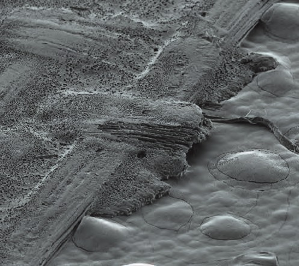
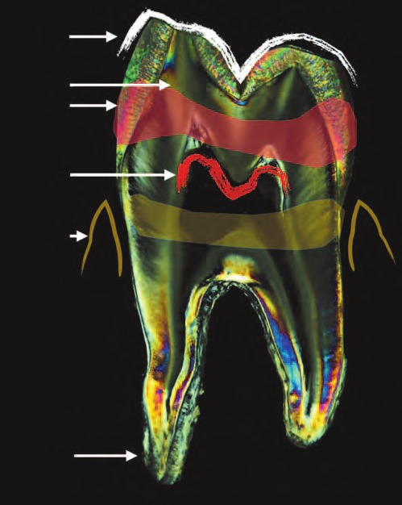
Існує поняття про контрфорси зуба – силові пояси. Це найпотужніші структури в архітектурі зуба. Вони сприймають навантаження на зуб, рівномірно розподіляють і компенсують його при стисненні.
За втрати хоча б однієї з цих важливих структур зуб як орган стає вразливим до навантажень, у несприятливих умовах тканини перевитрачають свої ресурси щодо функціональності, і це призводить до незворотних наслідків. Жувальні навантаження, циклічні напруги і стрес впливають на механіку реставраційної конструкції або зубів, коли вони зазнають перевантаження і ламаються у «слабких» місцях.
Збільшити міцність і стійкість до деформацій усієї реставраційної конструкції в цілому – основне завдання армування. При цьому необхідно використовувати матеріал, що має підвищені властивості міцності щодо основного матеріалу – композиту, яким ми звично виконуємо прямі реставрації. Для спрощення розуміння роботи скловолокон у дуеті з реставраційним матеріалом можна провести паралелі з будівельним композитним матеріалом – залізобетоном, який складається з бетону і сталі, з точки зору такого важливого напрямку інженерії, як опір матеріалів.
Композит є матеріалом, стійким до навантажень на стиснення, як бетон у будівництві, добре утримує задану форму, проте в деяких ситуаціях він недостатньо міцний, щоб витримувати згинання. Волокна у свою чергу – це матеріал з підвищеною стійкістю до розтягування і згинання, як металеві балки у будівництві.
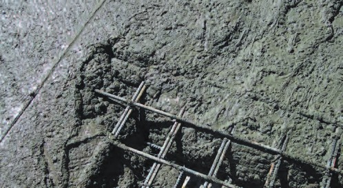
Сьогодні скловолоконне армування зустрічається практично у всіх hi-tech галузях. Скловолокно є частиною зовнішнього захисту космічних кораблів, воно активно використовується у суднобудуванні, машинобудуванні і не тільки. З появою на стоматологічному ринку армувальних матеріалів різних форм випуску, починаючи з 90-х років минулого століття, прямі реставрації одержали розширені можливості в контексті довговічності і функціональності у прямій адгезивній реставрації.
Загальні комбіновані властивості міцності складу композит + волокно завжди вищі, ніж у цих складових, взятих окремо. Використовуючи головні плюси реставраційного матеріалу і волокна, ми можемо отримати «залізобетонний» аргумент для зміцнення репутації прямої реставрації, наприклад, при відновленні зруйнованих зубів.
Реставрація, армована волокном, має п'ять обов'язкових компонентів:
- реставраційна основа – власні тканини зуба, який потребує додаткового зміцнення;
- адгезивне з'єднання з композитним посередником, на який фіксується скловолокно, міцність цього з'єднання тканин зуба із сучасними адгезивними системами сягає 25 МПа;
- композитний посередник між адгезивним шаром і армувальним компонентом як обов'язкова умова при адаптації фрагмента волокна до тканин зуба, можуть бути використані текучі форми композитного матеріалу або будь-який наповнений композит;
- армувальний компонент – його особливістю є можливість хімічного зв'язку просочених адгезивом волокон з композитними системами;
- власне реставрація.
Види армувальних волокон
Сьогодні на ринку стоматологічних матеріалів доступні різні форми випуску армувальних волокон. Різноманітні варіанти сфери їх застосування залежать від показань до армування зубів і реставрацій. За типом матеріалу, з якого виконані волокна, можна виділити:
– поліетиленові волоконні системи, виготовлені на основі органічної матриці поліетилену (Ribbond, Connect, Splint-It), найчастіше зустрічаються без преімпрегнації адгезивним компонентом, тобто вони не наповнені ним в умовах заводу. Стоматологові потрібно додатково обробити волокно на робочому місці адгезивом-наповнювачем від фірми-виробника;
– скловолоконні армувальні системи, найбільш широко застосовувана форма, на основі неорганічної матриці, вони можуть бути:
– не просочені адгезивним компонентом волоконні системи (GlasSpan, Fiber-Splint);
– наповнені адгезивним компонентом промисловим способом волокна (EverStick / Dentapreg) – поки що найдосконаліша група з армувальних систем. Вони мають найбільшу міцність (до 1500 МПа), яка забезпечується їх структурою, окремо силанізовані волокна в пучку об'єднані спеціальною матрицею, яка добре адаптується до композитного компоненту, і завдяки міцному хімічному зв'язку досягається повна однорідність усієї конструкції після полімеризації. Армувальні балки і стрічки представлені безліччю найтонших волокон діаметром 35 мкм, сплетених між собою. Орієнтація волокон може бути двох типів:
– односпрямовано розташовані волокна в стрічці;
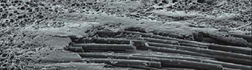
– різноспрямовані поперечнозв'язані волокна плетеного типу.
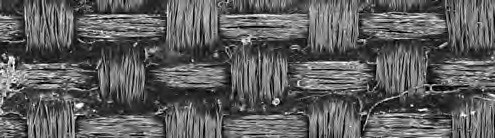
Волокна мають високу міцність на розрив, а при навантаженнях на згин починають працювати на розтягування, чинячи опір зусиллю, що згинає. В умовах максимальної напруги вони залишаються у стабільному стані.
Можна порівняти основний показник міцності скловолокон з таким показником у кобальтохромових сплавів і сплавів на основі золота – матеріалів, які давно завоювали авторитет у протезуванні та армуванні зубів і реставрацій. Сучасні волоконні системи вигідно витримують конкуренцію з цими старожилами армування.
Ще одна важлива характеристика волокон, що впливає на функціональність конструкції, – модуль пружності, він відображає властивості матеріалу або тканини чинити опір розтягуванню/стисненню при пружних деформаціях.
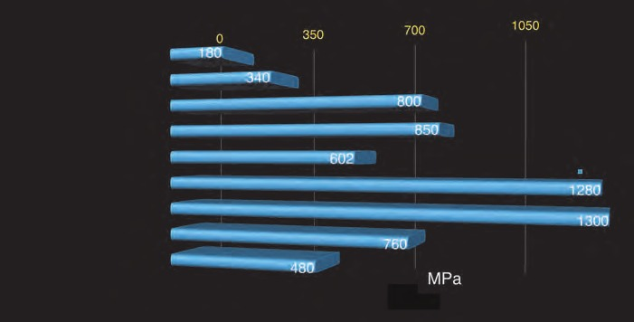
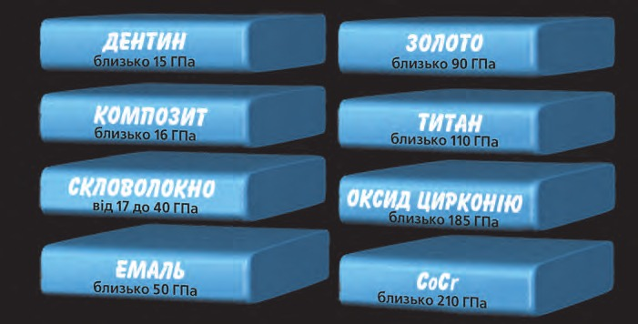
Основні принципи роботи зі скловолокном
Використовуючи скловолоконні фрагменти для армування реставрацій, слід дотримуватися низки основних правил. Не можна торкатися до волокна пальцями, навіть якщо вони в рукавичках, забруднення волокна призводить до його деградації і ослаблення склеювання з композитом. Для роботи зі скловолокном необхідні абсолютно чисті інструменти, призначені для витягування волокна (пінцет), для вирізання фрагментів необхідної довжини і форми (ножиці), адаптації його до тканин зуба і для захисту волокна від передчасної полімеризації (StickSTEPPER / GC Europe N. V., широка гладилка). Усі поверхні інструментів для адаптації волокна для запобігання прилипанню його до них можна змочити в класичному адгезиві, що не містить розчинника.
Ще одне правило: перш ніж відрізати фрагмент волокна, слід приготувати викрійку-шаблон довжини або форми. Фрагменти волокна потрібно захистити світлонепроникними боксами для запобігання передчасній полімеризації його адгезивного просочення. А якщо волокно не просякнуте адгезивним компонентом в умовах заводу, треба робити його силанізацію безпосередньо перед використанням у свіжій порції «рідного» адгезиву шляхом повного занурення фрагмента в просочення. Після розкриття упаковки волокно слід зберігати у холодильнику в закритій упаковці (до 6 місяців).
Варіанти клінічного застосування
Адгезивне шинування – терапевтичний метод іммобілізації рухливих зубів, що є обов'язковою процедурою в комплексному лікуванні захворювань пародонта, посттравматичній реабілітації рухомих зубів. До процедури шинування обов'язково призначається консультація у пародонтолога, робляться видалення зубних відкладень, вибіркове пришліфовування суперконтактів та інші необхідні маніпуляції. Шинувальна конструкція залучає рухливі зуби, що вимагають стабілізації, з обов'язковим включенням стійких зубів, на які фіксується адгезивна шина. За обсягом інвазії в тканини шинування буває двох типів: екстракоронкове та інтракоронкове.
Екстракоронкове шинування не вимагає препарування твердих тканин зубів, шинувальна конструкція фіксується поверхнево. При інтракоронковому шинуванні роблять неглибокі пропили під шинувальний елемент, орієнтуючись на ширину обраної стрічки, а позицію на коронці зуба необхідно провести по проксимальних контактних точках. При будь-якому типі шинування обов'язкова повноцінна адгезивна обробка тих ділянок зубів, на які буде зафіксована шинувальна конструкція. Композитний посередник вноситься на підготовлені тканини, після чого фіксується відміряний за шаблоном потрібної довжини скловолоконний фрагмент шинувальної стрічки.
Для зручності можна виконувати покрокову полімеризацію скловолокна. Після остаточної фіксації волокно необхідно перекрити ще однією порцією композитного матеріалу, а завершальним етапом має бути шліфування та полірування шинувальної конструкції.
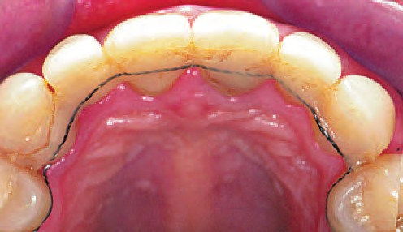
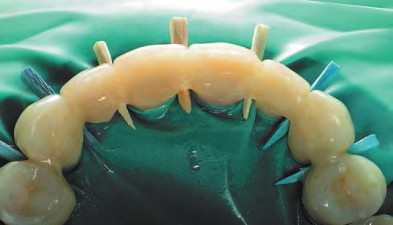
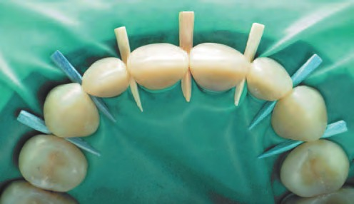
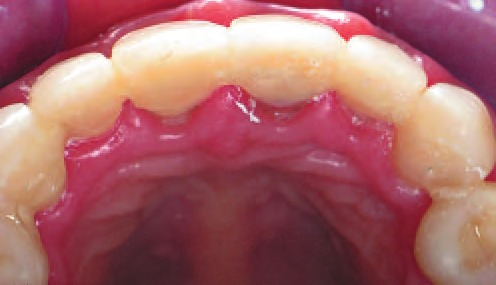
Постортодонтична ретенція скловолокном, така практично непомітна для чутливих органів ротової порожнини, стабілізація зубного ряду після лікування у ортодонта є альтернативою для ретейнерів з ортодонтичного дроту. Невидимість і еластичність такого ретейнера, малий обсяг конструкції, що не створює дискомфорту, а також полегшений гігієнічний догляд – ось низка позитивних властивостей, які роблять привабливим цей вид ретенції для пацієнтів.
Для шинувальних конструкцій можна використовувати як волокна плетеного типу, так і односпрямовані балки з рекомендованою шириною не більше 2 мм.
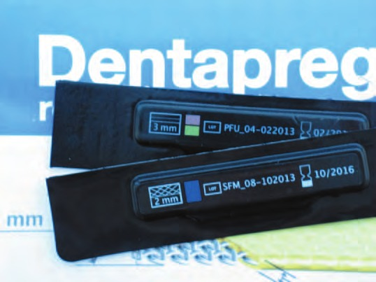
Армування реставрацій у межах коронкової частини зуба
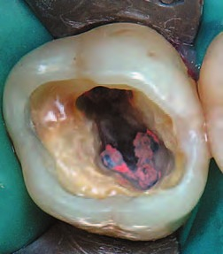
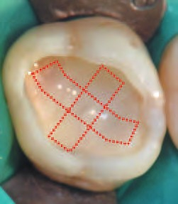
У клінічних ситуаціях, коли зуб у бічній ділянці був ендодонтично лікований, при виборі методу відновлення цілісності коронки на користь прямої реставрації необхідно враховувати той факт, що депульповані зуби по-іншому сприймають функціональні навантаження, ніж вітальні. Знижена пропріорецептивна чутливість, відсутні деякі контрфорси, втрачені обсяги дентинних і емалевих тканин... Тому більшість операторів надає перевагу непрямим методам відновлення девітальних зубів. Головний напрямок сучасної стоматології – малоінвазивність, і при виборі методу на користь прямої реставрації зубів з лікованими кореневими каналами необхідне застосування додаткового їх армування, імітації штучних контрфорсів. Для цього рекомендується використання волокон плетеного типу, оскільки навантаження на тканини в бічній ділянці зубної дуги різноспрямовані, а мета армування – протистояти тиску на розрив і зламу між горбиками в конструкції реставрації. Два фрагменти скловолокна укладаються Х-подібно на дно порожнини зуба таким чином, щоб фрагменти армували і дно, і стінки порожнини, від горбика до горбика в обсязі дентинного поверху. Завдання такого армування – імітація того контрфорса зуба, який раніше забезпечував дах порожнини зуба. Така профілактика утворення тріщин і відколу горбиків бічних зубів уже клінічно перевірена. Також, укладаючи вертикально скловолокно в циркулярному напрямку по стінках порожнини оклюзійного дефекту, можна зімітувати ферул-ефект або підтримати екватор.
Клінічний випадок 1
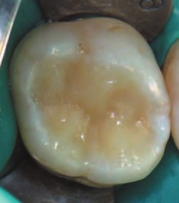
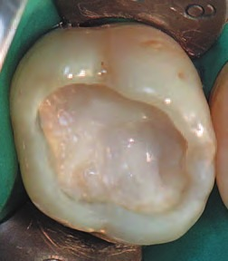
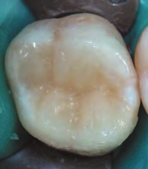
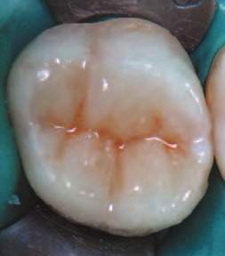
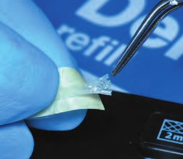
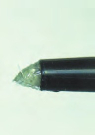
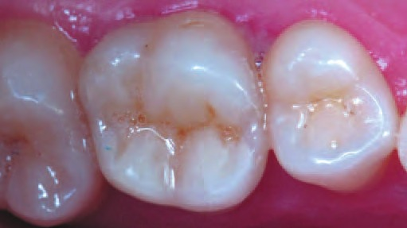
Клінічний випадок 2
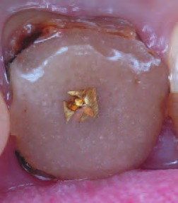
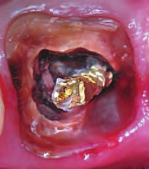
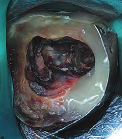
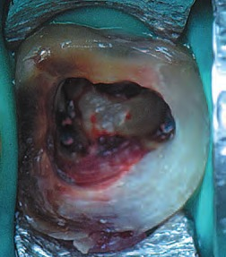
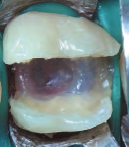
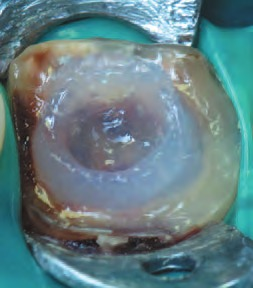
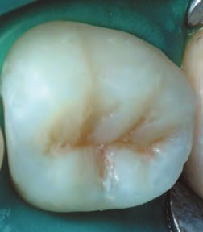
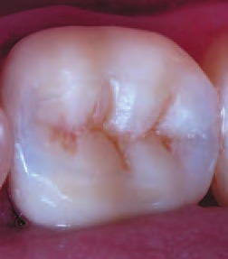
Клінічний випадок 3
Можливе армування при реставрації вітальних зубів у фронтальній ділянці за значних втрат тканин, наприклад, після травми. Використовуємо викрійки за формою коронки з фрагментів скловолокон найтонших форм EverStick NET і адаптуємо їх послідовно з орального, а потім вестибулярного боку, формуючи скловолокнисту основу під пряму реставрацію.
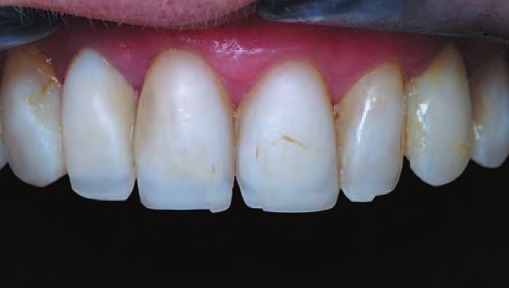
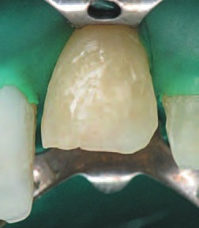
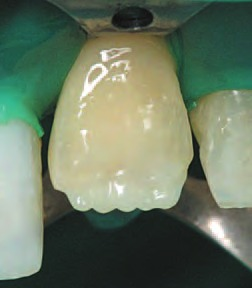
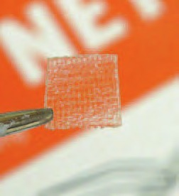
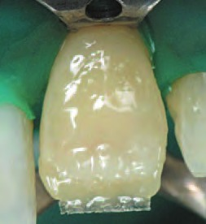
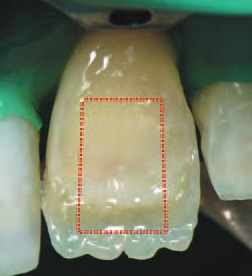
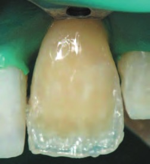
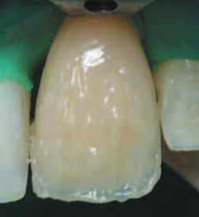
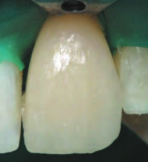
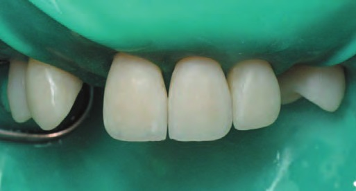
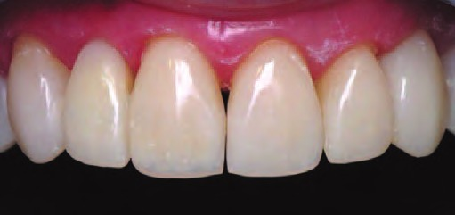
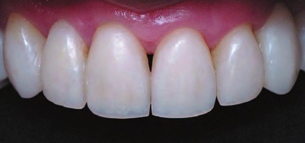
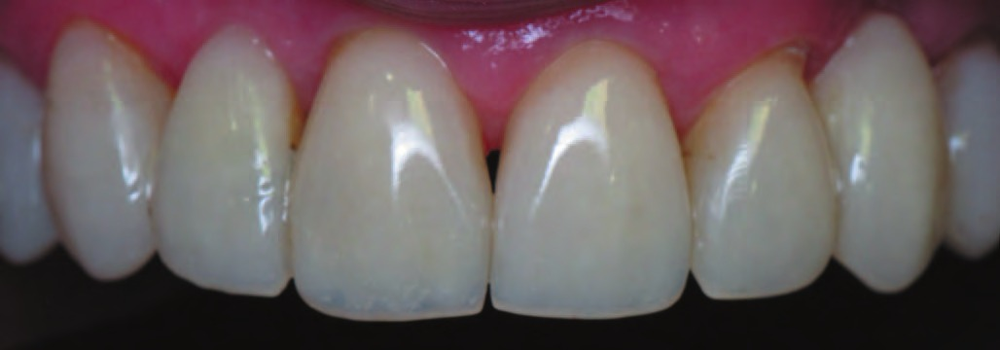
Індивідуальні скловолоконні вкладки
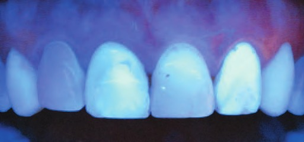
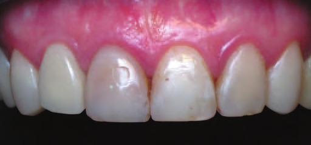
Поліпшені умови для внутрішньокореневої ретенції реставрації до решти тканин зуба, що зазнав значних руйнувань, можна створити за допомогою індивідуально виготовлених скловолоконних вкладок. Якщо існує дефіцит площі адгезивного з'єднання на коронковій частині зуба при значних його руйнуваннях, то підігнана за формою і розмірами устя і кореневого каналу вкладка забезпечує максимальну площу для адгезії. При цьому провадиться мінімальне препарування тканин зуба, що залишилися, під таку армувальну конструкцію. Із кількох фрагментів скловолоконної балки необхідної довжини моделюється вкладка потрібної конусності і ширини – шляхом індивідуального підганяння заготовок безпосередньо до підготованої порожнини. Є можливість формування та моделювання коронкової частини скловолоконної вкладки до світлоотвердіння. Рекомендується використання волоконних балок з односпрямованою орієнтацією волокон EverStick / Dentapreg. При фіксації таких внутрішньоканальних армувальних конструкцій глибиною занурення в канал від 5 мм рекомендується використовувати композит подвійного отвердіння, наприклад Calibra / Dentsply Sirona. У випадках, коли глибина занурення в канал не перевищує 5 мм, можливе використання текучого композиту SDR / Dentsply Sirona для адаптації і фіксації скловолоконної вкладки. Скловолоконні трубочки (їх може бути в балці до 4000) працюють як світлопроводи в пучку, проводячи по собі світло і поліпшуючи ефект полімеризації композитного посередника та власне волоконної вкладки.
Клінічний випадок 4
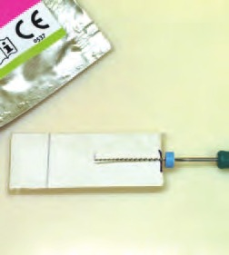
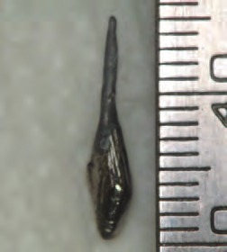
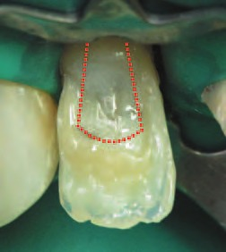
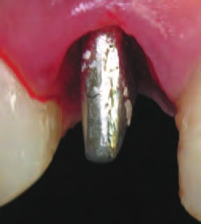
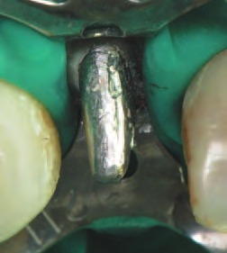
Висновки
З появою скловолоконних матеріалів у стоматологічній практиці значно удосконалилася і технологія виконання прямих реставрацій. Прогнозованість результату і тривалість терміну служби при реставрації «ослаблених» зубів – основні позитивні риси армування, які відкривають нові можливості композитних реставрацій. Головне завдання застосування волоконного армування в реставрації – зміцнити репутацію прямої реставрації при відновленні цілісності і функції зубів.
Література
1. Радлинский С. В. Биомеханика зубов и реставраций // ДентАрт. – 2006. – № 2. – С. 42–48.
2. Lastumaki T., Lassila L. V. J., Vallittu P. K. The semi-interpenetrating polymer network matrix of fiber-reinforced composite and its effect on the surface adhesive properties. J Mater Sci-Mater M 2003;14:803–809.
3. Клод Р. Руфенахт. Эстетика в стоматологии. Интегративный подход. Под общей редакцией А. А. Любимова. – М: МЕДпресс-информ, 2012.
4. Пономаренко О. В. Адгезивные мостовидные конструкции боковых зубов // ДентАрт. – 2012. – № 3. – С. 10–21.